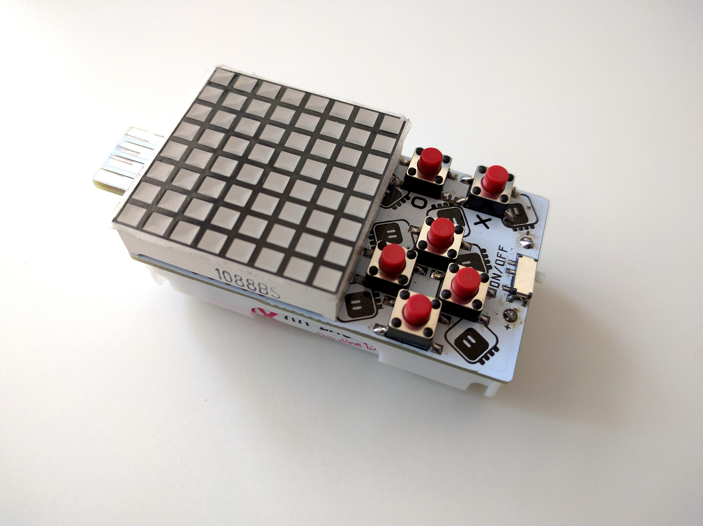

Complete Prototype¶
Published on 2018-08-04 in PewPew Standalone.
The battery holders finally arrived, so I replaced the temporary one with a proper one. I must say they are flimsier than I expected, but I suppose I can’t complain at this price.

With the device finally physically complete, I got to test how well it lies in the hands and how convenient it is to play on it. I have to say I’m not impressed. The two AA batteries add considerable weight and thickness, which together with the relatively small size of the device and closeness of the buttons doesn’t work very well. It’s not as bad as some handhelds I have seen, but could be better.
I’m thinking about switching to horizontal arrangement again, with the buttons on both sides of the display. Also, thinking about AAA batteries — they would be enough for a few days of playing still, but a bit lighter. They are slightly more expensive, though.